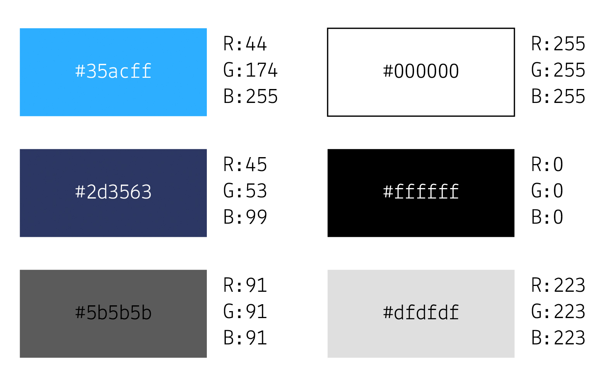
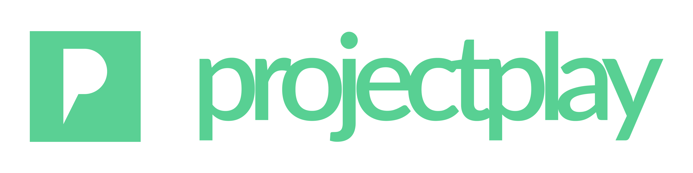
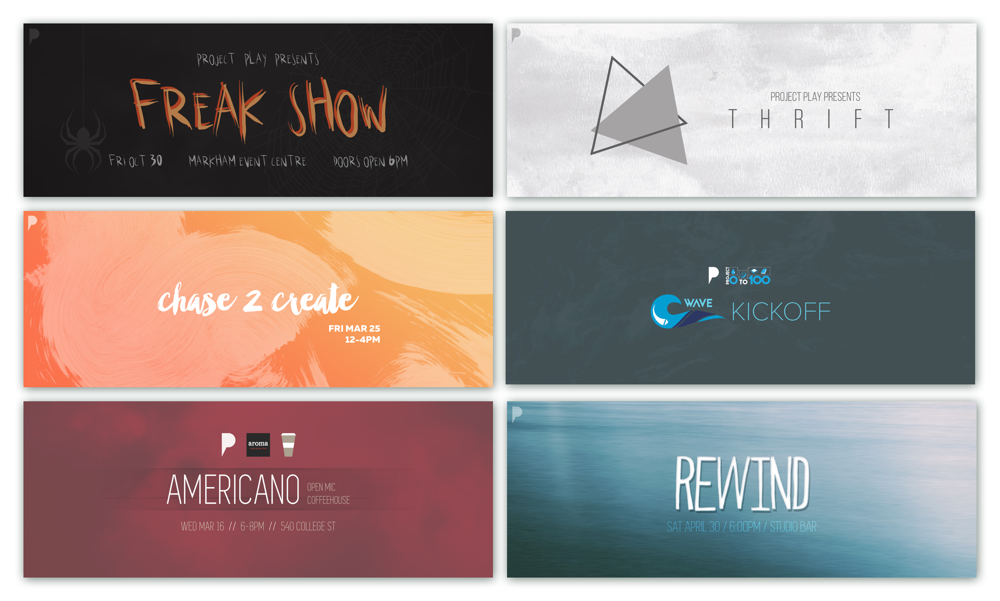

Type of work
Non-Profit
Tools
Adobe CS, Sketch
Date
Aug 2014 - Aug 2017
Link
FB Page
In August 2014, my best friend and I co-founded Project Play, a student-run non-profit organization using creative mediums to
empower youth, educate, and promote change. In my role, I was responsible for a gamut of fields including design, communications,
publicity, sponsorship, and sales.
Diving into the non-profit sector, we navigated by trial and error to find solutions in each discipline.
Specifically with design, the ambiguity of running our own organization meant starting a design system and style from scratch.
This trajectory helped to define my style and approach to design, as seen through an overview of my work below.
When we first started Project Play, we weren't sure of the direction we wanted to go into. With a clean state, we opted for
a simple text logo with our name.
Thinking about colour psychology and the best way to appear "professional", especially as a team of high school students, we initially
chose a colour palette with blues. It represented trust and loyalty, which when speaking to sponsors and local businesses, needed to be
affirmed constantly to alleviate the concerns of partnering with teenagers.

Throughout our operations and learning from experience, we realized that we wanted to appear more fun and creative. We looked at changing
our colour palette from blue to either green or purple. In the end, we decided upon green as it reflected our "paperless" principle and our
mission to promote environmentally conscious with every event we held.

Building a non-profit from scratch also meant building what our company meant and the principles we wanted to follow. When a new
member joined the team, we sent them a copy of our PPIP (Project Play Information Package), detailing what we expected of them and
what they should expect of us.

Throughout our operations and learning from experience, we realized that we wanted to appear more fun and creative. We looked at changing
our colour palette from blue to either green or purple. In the end, we decided upon green as it reflected our "paperless" principle and our
mission to promote environmentally conscious with every event we held.
Our goal in designing the website was to create a friendly, creative, and professional ambience to match our ethos.
After some exploration, I went with gradients to portray our happy-go-lucky approach in every project.
Facebook was our main source of promotion, and with that in mind, it was important to design eye-grabbing posters. I developed a colour
scheme for each of our events, applying it to our promotional posters while keeping the Project Play identity intact by placing our logo
subtly within each design.
